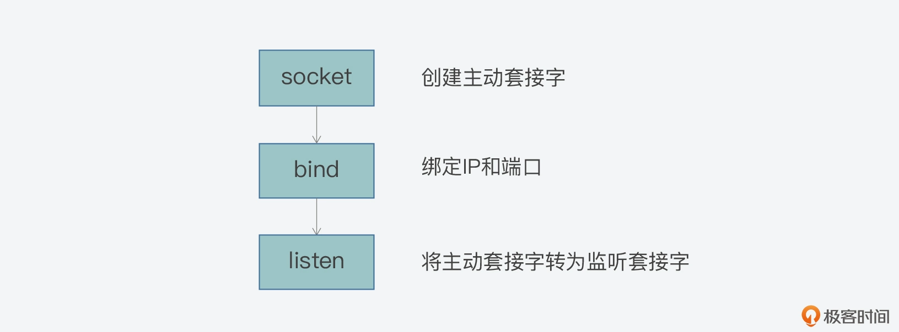
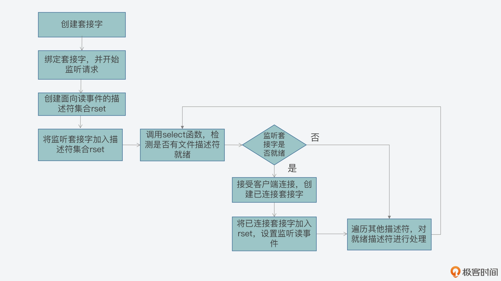
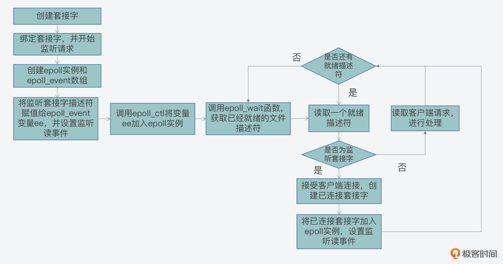
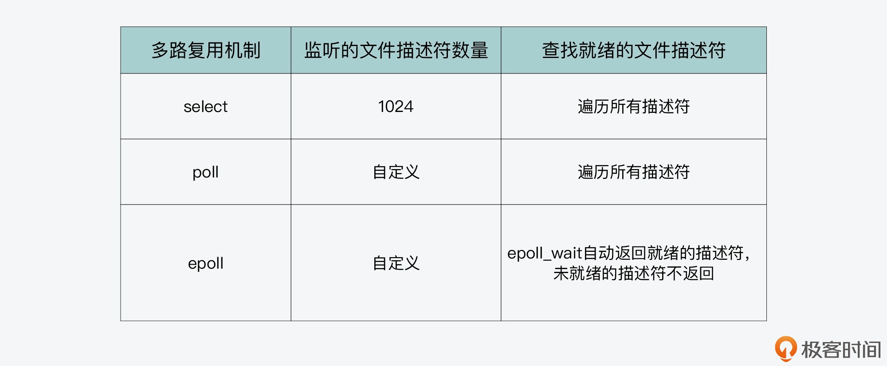

- 00 开篇词 阅读Redis源码能给你带来什么？.md.html
- 01 带你快速攻略Redis源码的整体架构.md.html
- 02 键值对中字符串的实现，用char还是结构体？.md.html
- 03 如何实现一个性能优异的Hash表？.md.html
- 04 内存友好的数据结构该如何细化设计？.md.html
- 05 有序集合为何能同时支持点查询和范围查询？.md.html
- 06 从ziplist到quicklist，再到listpack的启发.md.html
- 07 为什么Stream使用了Radix Tree？.md.html
- 08 Redis server启动后会做哪些操作？.md.html
- 09 Redis事件驱动框架（上）：何时使用select、poll、epoll？.md.html
- 10 Redis事件驱动框架（中）：Redis实现了Reactor模型吗？.md.html
- 11 Redis事件驱动框架（下）：Redis有哪些事件？.md.html
- 12 Redis真的是单线程吗？.md.html
- 13 Redis 6.0多IO线程的效率提高了吗？.md.html
- 14 从代码实现看分布式锁的原子性保证.md.html
- 15 为什么LRU算法原理和代码实现不一样？.md.html
- 16 LFU算法和其他算法相比有优势吗？.md.html
- 17 Lazy Free会影响缓存替换吗？.md.html
- 18 如何生成和解读RDB文件？.md.html
- 19 AOF重写（上）：触发时机与重写的影响.md.html
- 20 AOF重写（下）：重写时的新写操作记录在哪里？.md.html
- 21 主从复制：基于状态机的设计与实现.md.html
- 22 哨兵也和Redis实例一样初始化吗？.md.html
- 23 从哨兵Leader选举学习Raft协议实现（上）.md.html
- 24 从哨兵Leader选举学习Raft协议实现（下）.md.html
- 25 PubSub在主从故障切换时是如何发挥作用的？.md.html
- 26 从Ping-Pong消息学习Gossip协议的实现.md.html
- 27 从MOVED、ASK看集群节点如何处理命令？.md.html
- 28 Redis Cluster数据迁移会阻塞吗？.md.html
- 29 如何正确实现循环缓冲区？.md.html
- 30 如何在系统中实现延迟监控？.md.html
- 31 从Module的实现学习动态扩展功能.md.html
- 32 如何在一个系统中实现单元测试？.md.html
- 结束语 Redis源码阅读，让我们从新开始.md.html
- 捐赠
09 Redis事件驱动框架（上）：何时使用select、poll、epoll？
Redis 作为一个 Client-Server 架构的数据库，其源码中少不了用来实现网络通信的部分。而你应该也清楚，通常系统实现网络通信的基本方法是使用 Socket 编程模型，包括创建 Socket、监听端口、处理连接请求和读写请求。但是，由于基本的 Socket 编程模型一次只能处理一个客户端连接上的请求，所以当要处理高并发请求时，一种方案就是使用多线程，让每个线程负责处理一个客户端的请求。
而 Redis 负责客户端请求解析和处理的线程只有一个，那么如果直接采用基本 Socket 模型，就会影响 Redis 支持高并发的客户端访问。
因此，为了实现高并发的网络通信，我们常用的 Linux 操作系统，就提供了 select、poll 和 epoll 三种编程模型，而在 Linux 上运行的 Redis，通常就会采用其中的 epoll 模型来进行网络通信。
这里你可能就要问了：为啥 Redis 通常会选择 epoll 模型呢？这三种编程模型之间有什么区别？如果我们自己要开发高并发的服务器处理程序时，应该如何选择使用呢？
今天这节课，我就来和你聊聊，Redis 在高并发网络通信编程模型上的选择和设计思想。通过这节课的学习，你可以掌握 select、poll 和 epoll 三种模型的工作机制和使用方法。了解这些内容，一方面可以帮助你理解 Redis 整体网络通信框架的工作基础，另一方面，也可以让你学会如何进行高并发网络通信的开发。
那么，要想理解 select、poll 和 epoll 的优势，我们需要有个对比基础，也就是基本的 Socket 编程模型。所以接下来，我们就先来了解下基本的 Socket 编程模型，以及它的不足之处。
为什么 Redis 不使用基本的 Socket 编程模型？
刚刚我们说过，使用 Socket 模型实现网络通信时，需要经过创建 Socket、监听端口、处理连接和读写请求等多个步骤，现在我们就来具体了解下这些步骤中的关键操作，以此帮助我们分析 Socket 模型中的不足。
首先，当我们需要让服务器端和客户端进行通信时，可以在服务器端通过以下三步，来创建监听客户端连接的监听套接字（Listening Socket）：
- 调用 socket 函数，创建一个套接字。我们通常把这个套接字称为主动套接字（Active Socket）；
- 调用 bind 函数，将主动套接字和当前服务器的 IP 和监听端口进行绑定；
- 调用 listen 函数，将主动套接字转换为监听套接字，开始监听客户端的连接。

在完成上述三步之后，服务器端就可以接收客户端的连接请求了。为了能及时地收到客户端的连接请求，我们可以运行一个循环流程，在该流程中调用 accept 函数，用于接收客户端连接请求。
这里你需要注意的是，accept 函数是阻塞函数，也就是说，如果此时一直没有客户端连接请求，那么，服务器端的执行流程会一直阻塞在 accept 函数。一旦有客户端连接请求到达，accept 将不再阻塞，而是处理连接请求，和客户端建立连接，并返回已连接套接字（Connected Socket）。
最后，服务器端可以通过调用 recv 或 send 函数，在刚才返回的已连接套接字上，接收并处理读写请求，或是将数据发送给客户端。
下面的代码展示了这一过程，你可以看下。
listenSocket = socket(); //调用socket系统调用创建一个主动套接字
bind(listenSocket); //绑定地址和端口
listen(listenSocket); //将默认的主动套接字转换为服务器使用的被动套接字，也就是监听套接字
while (1) { //循环监听是否有客户端连接请求到来
connSocket = accept(listenSocket); //接受客户端连接
recv(connsocket); //从客户端读取数据，只能同时处理一个客户端
send(connsocket); //给客户端返回数据，只能同时处理一个客户端
}
不过，从上述代码中，你可能会发现，虽然它能够实现服务器端和客户端之间的通信，但是程序每调用一次 accept 函数，只能处理一个客户端连接。因此，如果想要处理多个并发客户端的请求，我们就需要使用多线程的方法，来处理通过 accept 函数建立的多个客户端连接上的请求。
使用这种方法后，我们需要在 accept 函数返回已连接套接字后，创建一个线程，并将已连接套接字传递给创建的线程，由该线程负责这个连接套接字上后续的数据读写。同时，服务器端的执行流程会再次调用 accept 函数，等待下一个客户端连接。
以下给出的示例代码，就展示了使用多线程来提升服务器端的并发客户端处理能力：
listenSocket = socket(); //调用socket系统调用创建一个主动套接字
bind(listenSocket); //绑定地址和端口
listen(listenSocket); //将默认的主动套接字转换为服务器使用的被动套接字，即监听套接字
while (1) { //循环监听是否有客户端连接到来
connSocket = accept(listenSocket); //接受客户端连接，返回已连接套接字
pthread_create(processData, connSocket); //创建新线程对已连接套接字进行处理
}
//处理已连接套接字上的读写请求
processData(connSocket){
recv(connsocket); //从客户端读取数据，只能同时处理一个客户端
send(connsocket); //给客户端返回数据，只能同时处理一个客户端
}
不过，虽然这种方法能提升服务器端的并发处理能力，遗憾的是，Redis 的主执行流程是由一个线程在执行，无法使用多线程的方式来提升并发处理能力。所以，该方法对 Redis 并不起作用。
那么，还有没有什么其他方法，能帮助 Redis 提升并发客户端的处理能力呢？
这就要用到操作系统提供的 IO 多路复用功能了。在基本的 Socket 编程模型中，accept 函数只能在一个监听套接字上监听客户端的连接，recv 函数也只能在一个已连接套接字上，等待客户端发送的请求。
而 IO 多路复用机制，可以让程序通过调用多路复用函数，同时监听多个套接字上的请求。这里既可以包括监听套接字上的连接请求，也可以包括已连接套接字上的读写请求。这样当有一个或多个套接字上有请求时，多路复用函数就会返回。此时，程序就可以处理这些就绪套接字上的请求，比如读取就绪的已连接套接字上的请求内容。
因为 Linux 操作系统在实际应用中比较广泛，所以这节课，我们主要来学习 Linux 上的 IO 多路复用机制。Linux 提供的 IO 多路复用机制主要有三种，分别是 select、poll 和 epoll。下面，我们就分别来学习下这三种机制的实现思路和使用方法。然后，我们再来看看，为什么 Redis 通常是选择使用 epoll 这种机制来实现网络通信。
使用 select 和 poll 机制实现 IO 多路复用
首先，我们来了解下 select 机制的编程模型。
不过在具体学习之前，我们需要知道，对于一种 IO 多路复用机制来说，我们需要掌握哪些要点，这样可以帮助我们快速抓住不同机制的联系与区别。其实，当我们学习 IO 多路复用机制时，我们需要能回答以下问题：
- 第一，多路复用机制会监听套接字上的哪些事件？
- 第二，多路复用机制可以监听多少个套接字？
- 第三，当有套接字就绪时，多路复用机制要如何找到就绪的套接字？
select 机制与使用
select 机制中的一个重要函数就是 select 函数。对于 select 函数来说，它的参数包括监听的文件描述符数量nfds、被监听描述符的三个集合*readfds、__writefds和exceptfds，以及监听时阻塞等待的超时时长*timeout。下面的代码显示了 select 函数的原型，你可以看下。
int select (int __nfds, fd_set *__readfds, fd_set *__writefds, fd_set *__exceptfds, struct timeval *__timeout)
这里你需要注意的是，Linux 针对每一个套接字都会有一个文件描述符，也就是一个非负整数，用来唯一标识该套接字。所以，在多路复用机制的函数中，Linux 通常会用文件描述符作为参数。有了文件描述符，函数也就能找到对应的套接字，进而进行监听、读写等操作。
所以，select 函数的参数readfds、writefds和__exceptfds表示的是，被监听描述符的集合，其实就是被监听套接字的集合。那么，为什么会有三个集合呢？
这就和我刚才提出的第一个问题相关，也就是多路复用机制会监听哪些事件。select 函数使用三个集合，表示监听的三类事件，分别是读数据事件（对应readfds集合）、写数据事件（对应writefds集合）和异常事件（对应__exceptfds集合）。
我们进一步可以看到，参数 readfds、writefds 和 exceptfds 的类型是 fd_set 结构体，它主要定义部分如下所示。其中，fd_mask类型是 long int 类型的别名，__FD_SETSIZE 和 __NFDBITS 这两个宏定义的大小默认为 1024 和 32。
typedef struct {
…
__fd_mask __fds_bits[__FD_SETSIZE / __NFDBITS];
…
} fd_set
所以，fd_set 结构体的定义，其实就是一个 long int 类型的数组，该数组中一共有 32 个元素（1024/32=32），每个元素是 32 位（long int 类型的大小），而每一位可以用来表示一个文件描述符的状态。
好了，了解了 fd_set 结构体的定义，我们就可以回答刚才提出的第二个问题了。select 函数对每一个描述符集合，都可以监听 1024 个描述符。
接下来，我们再来了解下如何使用 select 机制来实现网络通信。
首先，我们在调用 select 函数前，可以先创建好传递给 select 函数的描述符集合，然后再创建监听套接字。而为了让创建的监听套接字能被 select 函数监控，我们需要把这个套接字的描述符加入到创建好的描述符集合中。
然后，我们就可以调用 select 函数，并把创建好的描述符集合作为参数传递给 select 函数。程序在调用 select 函数后，会发生阻塞。而当 select 函数检测到有描述符就绪后，就会结束阻塞，并返回就绪的文件描述符个数。
那么此时，我们就可以在描述符集合中查找哪些描述符就绪了。然后，我们对已就绪描述符对应的套接字进行处理。比如，如果是 __readfds 集合中有描述符就绪，这就表明这些就绪描述符对应的套接字上，有读事件发生，此时，我们就在该套接字上读取数据。
而因为 select 函数一次可以监听 1024 个文件描述符的状态，所以 select 函数在返回时，也可能会一次返回多个就绪的文件描述符。这样一来，我们就可以使用一个循环流程，依次对就绪描述符对应的套接字进行读写或异常处理操作。
我也画了张图，展示了使用 select 函数进行网络通信的基本流程，你可以看下。

下面的代码展示的是使用 select 函数，进行并发客户端处理的关键步骤和主要函数调用：
int sock_fd,conn_fd; //监听套接字和已连接套接字的变量
sock_fd = socket() //创建套接字
bind(sock_fd) //绑定套接字
listen(sock_fd) //在套接字上进行监听，将套接字转为监听套接字
fd_set rset; //被监听的描述符集合，关注描述符上的读事件
int max_fd = sock_fd
//初始化rset数组，使用FD_ZERO宏设置每个元素为0
FD_ZERO(&rset);
//使用FD_SET宏设置rset数组中位置为sock_fd的文件描述符为1，表示需要监听该文件描述符
FD_SET(sock_fd,&rset);
//设置超时时间
struct timeval timeout;
timeout.tv_sec = 3;
timeout.tv_usec = 0;
while(1) {
//调用select函数，检测rset数组保存的文件描述符是否已有读事件就绪，返回就绪的文件描述符个数
n = select(max_fd+1, &rset, NULL, NULL, &timeout);
//调用FD_ISSET宏，在rset数组中检测sock_fd对应的文件描述符是否就绪
if (FD_ISSET(sock_fd, &rset)) {
//如果sock_fd已经就绪，表明已有客户端连接；调用accept函数建立连接
conn_fd = accept();
//设置rset数组中位置为conn_fd的文件描述符为1，表示需要监听该文件描述符
FD_SET(conn_fd, &rset);
}
//依次检查已连接套接字的文件描述符
for (i = 0; i < maxfd; i++) {
//调用FD_ISSET宏，在rset数组中检测文件描述符是否就绪
if (FD_ISSET(i, &rset)) {
//有数据可读，进行读数据处理
}
}
}
不过从刚才的介绍中，你或许会发现 select 函数存在两个设计上的不足：
- 首先，select 函数对单个进程能监听的文件描述符数量是有限制的，它能监听的文件描述符个数由 __FD_SETSIZE 决定，默认值是 1024。
- 其次，当 select 函数返回后，我们需要遍历描述符集合，才能找到具体是哪些描述符就绪了。这个遍历过程会产生一定开销，从而降低程序的性能。
所以，为了解决 select 函数受限于 1024 个文件描述符的不足，poll 函数对此做了改进。
poll 机制与使用
poll 机制的主要函数是 poll 函数，我们先来看下它的原型定义，如下所示：
int poll (struct pollfd *__fds, nfds_t __nfds, int __timeout);
其中，参数 *__fds 是 pollfd 结构体数组，参数 nfds 表示的是 *fds 数组的元素个数，而 __timeout 表示 poll 函数阻塞的超时时间。
pollfd 结构体里包含了要监听的描述符，以及该描述符上要监听的事件类型。这个我们可以从 pollfd 结构体的定义中看出来，如下所示。pollfd 结构体中包含了三个成员变量 fd、events 和 revents，分别表示要监听的文件描述符、要监听的事件类型和实际发生的事件类型。
struct pollfd {
int fd; //进行监听的文件描述符
short int events; //要监听的事件类型
short int revents; //实际发生的事件类型
};
pollfd 结构体中要监听和实际发生的事件类型，是通过以下三个宏定义来表示的，分别是 POLLRDNORM、POLLWRNORM 和 POLLERR，它们分别表示可读、可写和错误事件。
#define POLLRDNORM 0x040 //可读事件
#define POLLWRNORM 0x100 //可写事件
#define POLLERR 0x008 //错误事件
好了，了解了 poll 函数的参数后，我们来看下如何使用 poll 函数完成网络通信。这个流程主要可以分成三步：
- 第一步，创建 pollfd 数组和监听套接字，并进行绑定；
- 第二步，将监听套接字加入 pollfd 数组，并设置其监听读事件，也就是客户端的连接请求；
- 第三步，循环调用 poll 函数，检测 pollfd 数组中是否有就绪的文件描述符。
而在第三步的循环过程中，其处理逻辑又分成了两种情况：
- 如果是连接套接字就绪，这表明是有客户端连接，我们可以调用 accept 接受连接，并创建已连接套接字，并将其加入 pollfd 数组，并监听读事件；
- 如果是已连接套接字就绪，这表明客户端有读写请求，我们可以调用 recv/send 函数处理读写请求。
我画了下面这张图，展示了使用 poll 函数的流程，你可以学习掌握下。
另外，为了便于你掌握在代码中使用 poll 函数，我也写了一份示例代码，如下所示：
int sock_fd,conn_fd; //监听套接字和已连接套接字的变量
sock_fd = socket() //创建套接字
bind(sock_fd) //绑定套接字
listen(sock_fd) //在套接字上进行监听，将套接字转为监听套接字
//poll函数可以监听的文件描述符数量，可以大于1024
#define MAX_OPEN = 2048
//pollfd结构体数组，对应文件描述符
struct pollfd client[MAX_OPEN];
//将创建的监听套接字加入pollfd数组，并监听其可读事件
client[0].fd = sock_fd;
client[0].events = POLLRDNORM;
maxfd = 0;
//初始化client数组其他元素为-1
for (i = 1; i < MAX_OPEN; i++)
client[i].fd = -1;
while(1) {
//调用poll函数，检测client数组里的文件描述符是否有就绪的，返回就绪的文件描述符个数
n = poll(client, maxfd+1, &timeout);
//如果监听套件字的文件描述符有可读事件，则进行处理
if (client[0].revents & POLLRDNORM) {
//有客户端连接；调用accept函数建立连接
conn_fd = accept();
//保存已建立连接套接字
for (i = 1; i < MAX_OPEN; i++){
if (client[i].fd < 0) {
client[i].fd = conn_fd; //将已建立连接的文件描述符保存到client数组
client[i].events = POLLRDNORM; //设置该文件描述符监听可读事件
break;
}
}
maxfd = i;
}
//依次检查已连接套接字的文件描述符
for (i = 1; i < MAX_OPEN; i++) {
if (client[i].revents & (POLLRDNORM | POLLERR)) {
//有数据可读或发生错误，进行读数据处理或错误处理
}
}
}
其实，和 select 函数相比，poll 函数的改进之处主要就在于，它允许一次监听超过 1024 个文件描述符。但是当调用了 poll 函数后，我们仍然需要遍历每个文件描述符，检测该描述符是否就绪，然后再进行处理。
那么，有没有办法可以避免遍历每个描述符呢？这就是我接下来向你介绍的 epoll 机制。
使用 epoll 机制实现 IO 多路复用
首先，epoll 机制是使用 epoll_event 结构体，来记录待监听的文件描述符及其监听的事件类型的，这和 poll 机制中使用 pollfd 结构体比较类似。
那么，对于 epoll_event 结构体来说，其中包含了 epoll_data_t 联合体变量，以及整数类型的 events 变量。epoll_data_t 联合体中有记录文件描述符的成员变量 fd，而 events 变量会取值使用不同的宏定义值，来表示 epoll_data_t 变量中的文件描述符所关注的事件类型，比如一些常见的事件类型包括以下这几种。
- EPOLLIN：读事件，表示文件描述符对应套接字有数据可读。
- EPOLLOUT：写事件，表示文件描述符对应套接字有数据要写。
- EPOLLERR：错误事件，表示文件描述符对于套接字出错。
下面的代码展示了 epoll_event 结构体以及 epoll_data 联合体的定义，你可以看下。
typedef union epoll_data
{
...
int fd; //记录文件描述符
...
} epoll_data_t;
struct epoll_event
{
uint32_t events; //epoll监听的事件类型
epoll_data_t data; //应用程序数据
};
好了，现在我们知道，在使用 select 或 poll 函数的时候，创建好文件描述符集合或 pollfd 数组后，就可以往数组中添加我们需要监听的文件描述符。
但是对于 epoll 机制来说，我们则需要先调用 epoll_create 函数，创建一个 epoll 实例。这个 epoll 实例内部维护了两个结构，分别是记录要监听的文件描述符和已经就绪的文件描述符，而对于已经就绪的文件描述符来说，它们会被返回给用户程序进行处理。
所以，我们在使用 epoll 机制时，就不用像使用 select 和 poll 一样，遍历查询哪些文件描述符已经就绪了。这样一来， epoll 的效率就比 select 和 poll 有了更高的提升。
在创建了 epoll 实例后，我们需要再使用 epoll_ctl 函数，给被监听的文件描述符添加监听事件类型，以及使用 epoll_wait 函数获取就绪的文件描述符。
我画了一张图，展示了使用 epoll 进行网络通信的流程，你可以看下。

下面的代码展示了使用 epoll 函数的流程，你也可以看下。
int sock_fd,conn_fd; //监听套接字和已连接套接字的变量
sock_fd = socket() //创建套接字
bind(sock_fd) //绑定套接字
listen(sock_fd) //在套接字上进行监听，将套接字转为监听套接字
epfd = epoll_create(EPOLL_SIZE); //创建epoll实例，
//创建epoll_event结构体数组，保存套接字对应文件描述符和监听事件类型
ep_events = (epoll_event*)malloc(sizeof(epoll_event) * EPOLL_SIZE);
//创建epoll_event变量
struct epoll_event ee
//监听读事件
ee.events = EPOLLIN;
//监听的文件描述符是刚创建的监听套接字
ee.data.fd = sock_fd;
//将监听套接字加入到监听列表中
epoll_ctl(epfd, EPOLL_CTL_ADD, sock_fd, &ee);
while (1) {
//等待返回已经就绪的描述符
n = epoll_wait(epfd, ep_events, EPOLL_SIZE, -1);
//遍历所有就绪的描述符
for (int i = 0; i < n; i++) {
//如果是监听套接字描述符就绪，表明有一个新客户端连接到来
if (ep_events[i].data.fd == sock_fd) {
conn_fd = accept(sock_fd); //调用accept()建立连接
ee.events = EPOLLIN;
ee.data.fd = conn_fd;
//添加对新创建的已连接套接字描述符的监听，监听后续在已连接套接字上的读事件
epoll_ctl(epfd, EPOLL_CTL_ADD, conn_fd, &ee);
} else { //如果是已连接套接字描述符就绪，则可以读数据
...//读取数据并处理
}
}
}
好了，到这里，你就了解了 epoll 函数的使用方法了。实际上，也正是因为 epoll 能自定义监听的描述符数量，以及可以直接返回就绪的描述符，Redis 在设计和实现网络通信框架时，就基于 epoll 机制中的 epoll_create、epoll_ctl 和 epoll_wait 等函数和读写事件，进行了封装开发，实现了用于网络通信的事件驱动框架，从而使得 Redis 虽然是单线程运行，但是仍然能高效应对高并发的客户端访问。
小结
今天这节课，我给你介绍了 Redis 网络通信依赖的操作系统底层机制，也就是 IO 多路复用机制。
由于 Redis 是单线程程序，如果使用基本的 Socket 编程模型的话，只能对一个监听套接字或一个已连接套接字进行监听。而当 Redis 实例面临很多并发的客户端时，这种处理方式的效率就会很低。
所以，和基本的 Socket 通信相比，使用 IO 多路复用机制，就可以一次性获得就绪的多个套接字，从而避免了逐个检测套接字的开销。
这节课，我是以最常用的 Linux 操作系统为例，给你具体介绍了 Linux 系统提供的三种 IO 多路复用机制，分别是 select、poll 和 epoll。这三种机制在能监听的描述符数量和查找就绪描述符的方法上是不一样的，你可以重点参考下图，来掌握它们的不同之处。这些差异，其实也决定了 epoll 相比于 select 和 poll 来说，效率更高，也应用更广泛。

最后我想说的是，虽然这节课我没有给你介绍 Redis 的源码，但是学习 IO 多路复用的机制和使用流程，其实就是掌握 Redis 事件驱动框架的基础。Redis 的ae_select.c和ae_epoll.c文件，就分别使用了 select 和 epoll 这两种机制，实现 IO 多路复用。而在接下来的第 10、11 两节课上，我还会给分别你介绍，Redis 事件驱动框架是如何基于 epoll 进行封装开发和运行的，以及 Redis 事件驱动框架的事件类型和处理方法。这样一来，你就能对 Redis 事件驱动框架的底层支撑、框架运行和事件类型与处理，有个全面的掌握了。
每课一问
在 Redis 事件驱动框架代码中，分别使用了 Linux 系统上的 select 和 epoll 两种机制，你知道为什么 Redis 没有使用 poll 这一机制吗？
© 2019 - 2023 Liangliang Lee. Powered by gin and hexo-theme-book.